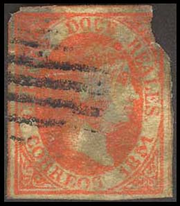
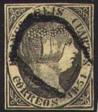
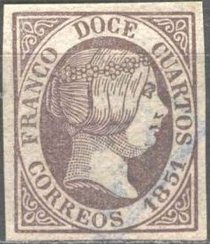
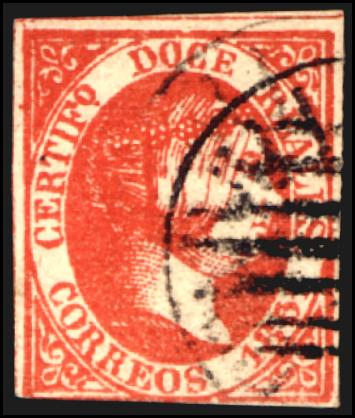
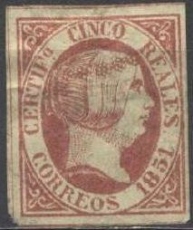
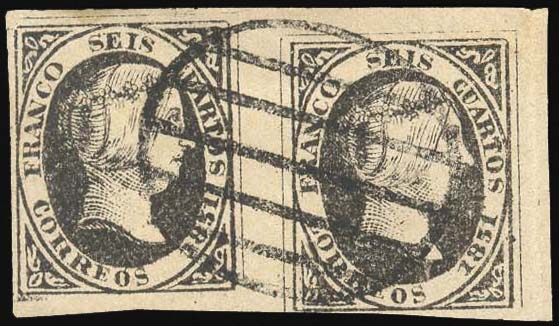
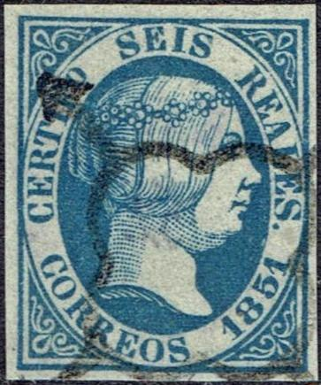

{kind=link}

A forgery of the 6 cu stamp with the word 'CORREOS' written too big
Return To Catalogue - Spain Queen Isabella 1850-1855
Note: on my website many of the
pictures can not be seen! They are of course present in the
catalogue;
contact me if you want to purchase it.
Many forgeries were made of the 1851 issue with Queen Isabella. Much information can be found on: http://www.graus.com/ (in Spanish).
Examples of forgeries:

A non-existing 12 r ('DOCE') orange stamp

A forgery of the 6 cu stamp with the word 'CORREOS' written too
big
More deceptive forgeries:


(Segui forgeries? Usually uncancelled)


(Segui forgeries)
Segui forgeries are usually uncancelled, I think he made forgeries of all values (I have seen 12 Cs, 2 Rs and 6 Rs for certain). These forgeries are quite deceptive.
Peter Winter forgeries:


(Peter Winter forgeries)


Non-existing 'misprint' 6 r red with 2 r red printed together
The above forgeries were made by Peter Winter.
Spiro forgeries:

Image obtained from Bill Claghorn's forgery site:
http://www.geocities.com/claghorn1p/Spain/Spain06x.htm
Same forgery, reduced size, note the 'Spiro cancel' on this
forgery and the typical nose.
Spiro forgeries are sometimes cancelled with this very peculiar cancel, that was never used in Spain.
Fournier forgeries:


Fournier forgeries as taken from a Fournier Album.
First forgery of Album Weeds:



(First forgery of the 5 r and 10 r mentioned in Album Weeds,
image obtained from the forgery identification site of Bill
Claghorn). The 12 ("DOCE") r red is a bogus value.
The above forgeries of the 5 r and 10 r are the first forgeries of the 5 r and 10 r mentioned in Album Weeds; the "I" and "F" of "CERTIFo" are almost touching. The first "C" of "CINCO" is very strange (in the 5 r). The first "R" of "CORREOS" touches the line below it. The forgeries in the other values seem to have been made by the same forger.
Fourth forgery of the 5 r stamp of Album Weeds:

(Fourth forgery of the 5 r mentioned in Album Weeds)
The above stamp is the fourth forgery of the 5 r stamp, mentionned in Album Weeds. In the genuine 5 r the letters "REA" of "REALES" are all joined at the bottom, here they seem to be separated. The cancel is as the genuine stamps, but the 'arrows' are missing in this forgery. Also the "I" of "CINCO" is thicker at the top than at the bottom.

Forgery of the 10 r value with bottom part of the "Z"
of "DIEZ" too long
I've been told that this is a Oswald Schroder forgery, I have no
further information.
Other forgeries:
Some other forgeries:


(Forgery of the 2 r blue misprint together with a 'normal' 6 r
stamp)
Forgery of the 6 cu value.

Two forgeries with the "E" of "CORREOS" too
high and the second "O" of this word slanting; the nose
of the Queen is too sharp
Sperati forgeries (quite rare and valuable):
The next stamps are Sperati forgeries:


Sperati forgery of the twelve cuartos stamp.


Sperati forgeries, 'Reproduction A' of the 2 r value. There is a
break in the elliptic line between the "DOS" and
"REALES" (closer to the "R").
Distinguishing characteristic of Reproduction 'A' of the 2 r
Sperati forgery


Sperati 'Reproduction B' of the 2 r value. There is a break just
to the right of the "R" of "REALES" in the
elliptic line. Also the "S" of "DOS" is
broken at the top.
Distinguishing characteristics of the 2 r Sperati forgery,
'Reproduction B': break just to the right of the "R" of
"REALES" in the elliptic line and the "S" of
"DOS" is broken at the top.

Sperati forgery of the misprint 2 r blue.
Sperati 'proof' minisheet of the 2 r blue misprint


Sperati forgeries of the 5 r value.

This is apparently a Sperati 'misprint' in chocolate brown color
of the 5 r value.



There is a break in the oval line just above the "R" of
"REALES" in these Sperati forgeries of the 6 r value.

Sperati 'proof' minisheet of the 10 r stamp, 'reproduction A'
Sperati 'proof' minisheet of the 10 r stamp, 'reproduction B'


Sperati made two types of forgeries of the 10 r value;
Reproduction 'A' and 'B'.
{kind=link}
{kind=link}
{kind=link}
{kind=link}
{kind=link}